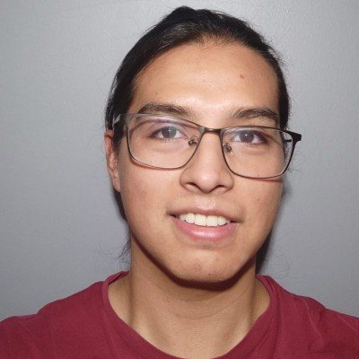
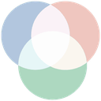

Sobre mí
Construyo modelos de lenguaje para Latinoamérica. En CENIA soy Tech Lead de LatamGPT y trabajo con LLMs de punta a punta, desde los datos y el entrenamiento hasta la evaluación.
En paralelo hago un Magíster en la UC, donde investigo world models y aprendizaje auto-supervisado (JEPA).
- Santiago, Chile
 Ingeniero Civil Matemático y Computacional, UC
Ingeniero Civil Matemático y Computacional, UC- Magíster en Ciencias de la Ingeniería (en curso), UC

LatamGPT
-
 Desde abril 2026
Desde abril 2026Tech Lead de LatamGPT v2
Lidero 4 equipos técnicos (10 personas) de datos, entrenamiento y evaluación.
-
Evaluación
Líder de Trueque
Benchmark colaborativo, revisado por personas, sobre conocimiento y cultura de Latinoamérica.
- Tech Lead · ML EngineerAbril 2026 – hoy
- ML Engineer, equipos de Datos y BenchmarksJulio 2025 – abril 2026
- ML Engineer InternEnero – julio 2025
Publicaciones
-
Technical report · 2026
LatamGPT 70B Technical Report
O. U. Florez, C. Aspillaga, G. Arriagada, S. Cifuentes, G. Fuentes, A. García, …, Á. Soto. LatamGPT Team, CENIA.
-
Enviado a Springer Nature · 2026
LatamGPT-Corpus, a text corpus of 296 billion tokens for language model pre-training
M. A. García-Pérez, …, G. Fuentes, …, Á. Soto.
-

CCN 2026 · Extended abstractUnlearnability of Symmetry-based Visual Relations by Deep Neural Networks
G. Puebla, J. Díaz-Ramírez, D. Araya, G. Fuentes, J. S. Bowers.
-
NeurIPS 2025 · LatinX in AI
WayraPPL: Accelerating Curriculum Learning with Knowledge-Distilled Perplexity Models
O. U. Florez y LatamGPT Team.
Proyectos
-
LLM Learning Route
Ruta abierta en español para aprender a construir LLMs, desde los fundamentos hasta el estado del arte, con guías prácticas con código.
-
dreamer4
Re-implementación no oficial de Dreamer 4 en PyTorch: tokenizer, dinámica y RL en imaginación sobre DMControl.